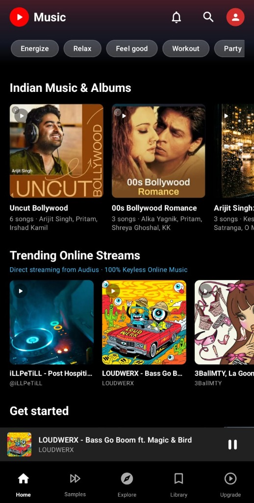
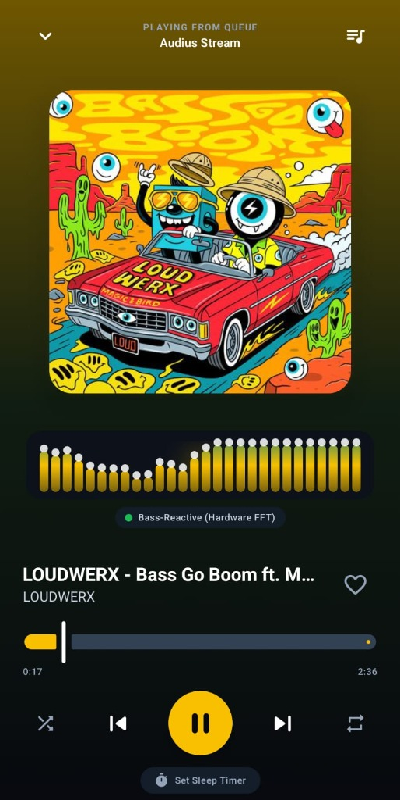
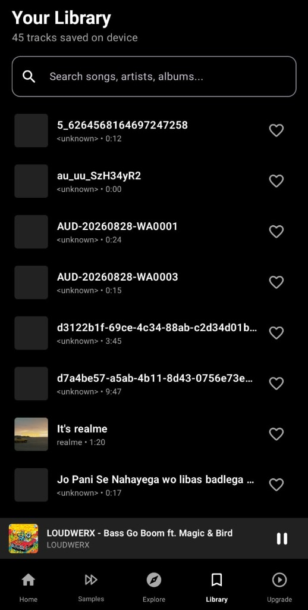

Engineered with Jetpack Compose, AndroidX Media3 ExoPlayer, and decentralized Audius streaming. Zero API keys. Instant offline playback. Hardware-accelerated 28-band bass-reactive audio visualizer.



Built according to Android Modern App Architecture standards with strict separation of concerns, resilient caching, and low-latency audio processing.
Direct integration with decentralized Audius validator nodes via api.audius.co. Implements dynamic host health consensus, round-robin connection pooling, HTTP 302 redirect resolution, and typo-tolerant search indexing without rate limits or API key mandates.
Attaches directly to ExoPlayer's audioSessionId via android.media.audiofx.Visualizer. Extracts real and imaginary Fourier components into 28 logarithmic frequency bins (20Hz–20kHz) with gravitational decay physics on floating peak dots and dynamic album-art ambient backlighting.
Asynchronous background indexing of local audio files (MP3, 24-bit FLAC, WAV, M4A, OGG) via Android's ContentResolver on Dispatchers.IO. In-memory search filtering with zero UI thread contention, backed by Room SQLite for favorites and playlists.
High-efficiency playback pipeline powered by AndroidX Media3 SimpleCache and LeastRecentlyUsedCacheEvictor. Prefetches upcoming queue audio chunks to deliver instantaneous next/previous track transitions without redundant network transfer.
VynoraPlaybackService guarantees uninterrupted background audio during process suspension, screen lock, and system memory pressure. Implements audio focus arbitration, notification playback controls, and automatic halt on headset disconnect.
Unidirectional Data Flow (UDF) with immutable UiState contracts collected via collectAsStateWithLifecycle. Features an edge-to-edge dark theme, docked persistent miniplayer, dynamic artwork color palette extraction, and a custom sleep timer modal.
Experience physics-based peak hold decay, logarithmic frequency binning, and dynamic amber album-art illumination running in real time.
Unfiltered captures recorded on Android 16 (API 36) showcasing the production interface.
Connects directly to AndroidX Media3 ExoPlayer’s native audio session ID. Renders 28 logarithmic frequency bins, physics-calculated peak-hold indicators, and extracts dynamic ambient amber glow from album cover art.
Clean separation between presentation, state orchestration, domain repositories, and the native audio engine.
Architectural extension points for senior developers to contribute and advance the Vynora platform.
Extend VynoraPlaybackService by instantiating android.media.audiofx.Equalizer, BassBoost, and Virtualizer hooked to the active audio session ID.
Implement androidx.media3.exoplayer.offline.DownloadManager and a foreground DownloadService to enable permanent offline caching of Audius streams.
Build a timestamped .lrc parser hooked to a free lyrics API (such as LRCLIB) to render synchronized karaoke-style lyrics on the Now Playing screen.
[mm:ss.xx]) into an indexed timeline.animateScrollToItem.Integrate Audius OAuth2 authentication to let users log in with their Audius account, syncing remote favorites and custom playlists with the blockchain.
Implement MediaLibraryService.MediaLibrarySessionCallback to expose Vynora's media hierarchy to automobile dashboards and smartwatches.
Add custom Perfetto trace markers across the ExoPlayer render loop, buffer chunk allocation, and Visualizer FFT transforms to ensure zero audio underruns.
Production-grade dependencies and Android platform standards implemented in Vynora v0.8.0.
| Component | Technology / Library | Version | Architectural Role |
|---|---|---|---|
| Programming Language | Kotlin | 2.1.0 | Primary language with Coroutines, Flow, and strict type safety |
| UI Framework | Jetpack Compose & Material 3 | BOM 2024.12.01 | Declarative reactive UI, edge-to-edge layouts, and smooth 120Hz animations |
| Audio Playback Engine | AndroidX Media3 (ExoPlayer) | 1.5.1 | Audio streaming, chunk buffering, 256MB LRU disk cache, and queue management |
| Background Service | Media3 MediaSessionService | 1.5.1 | VynoraPlaybackService handling lockscreen, audio focus, and media notifications |
| Online Discovery | Audius REST API | v1 Decentralized | 100% keyless online music discovery, trending charts, and direct streams |
| Offline Discovery | Android MediaStore | API 26–36 | Automatic local indexing of MP3, FLAC, WAV, M4A, and OGG audio files |
| Local Persistence | Room SQLite Database | 2.6.1 | User playlists, favorite songs, playback history, and play queue |
| Networking | Retrofit & OkHttp | 2.11.0 / 4.12.0 | Dynamic host selection, stream redirects, and network connection pooling |
| Image Loading | Coil Compose | 2.7.0 | Asynchronous album art loading, memory caching, and palette extraction |
| Target Platform | Android 16 (VanillaIceCream) | API 36 | Target SDK with backwards compatibility down to Android 8.0 (API 26) |
Direct 1-click APK download. Verified with Android APK Signature Scheme v2. Free and open-source under the Apache License 2.0.